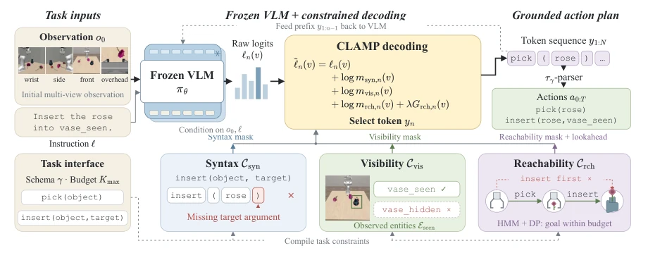
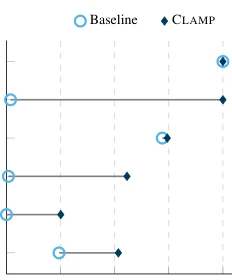
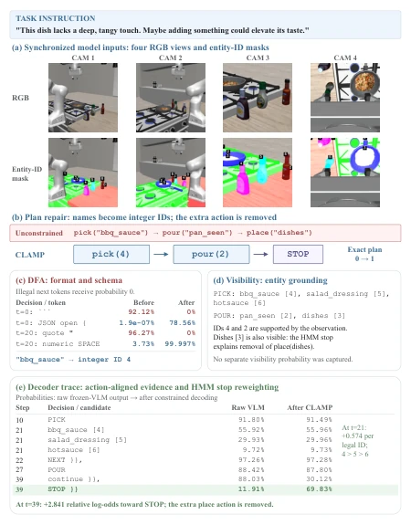
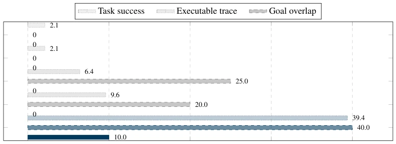
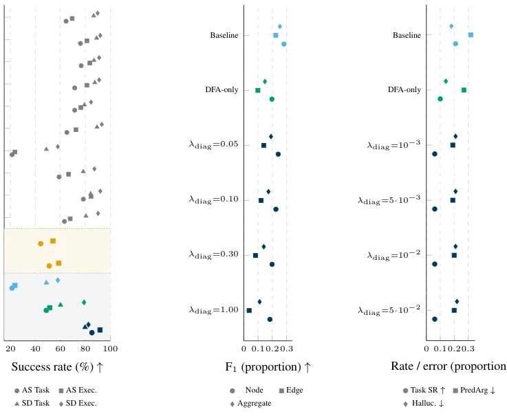
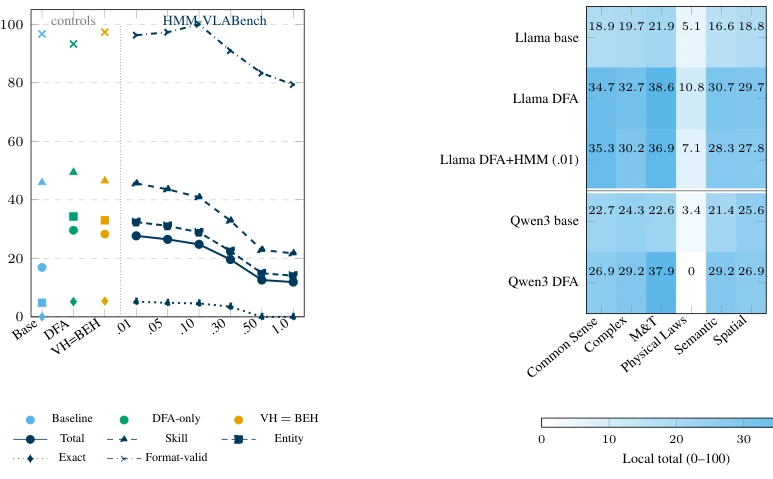

CLAMP imposes a tight constraint on VLMs, forcibly anchoring "taken-for-granted" hallucinations within real-world scenarios. It does not train the model but forcibly corrects it via external constraints; this "no parameter increase, only adding locks" approach indeed saves compute, akin to installing a speed limiter on a Ferrari: although it cannot run fast, at least it does not crash into walls. However, this method relies too heavily on the "lock": if the provided action model or scene perception has flaws, it will only generate erroneous plans more confidently, representing a variant of "garbage in, garbage out". Furthermore, it simplifies the planning problem to symbolic constraints, raising doubts about its generalization ability for continuous actions or complex physical interactions, after all, the real world is not a black-and-white finite state machine.
研究动机Motivation
具身智能规划的核心痛点在于：VLM 生成的计划往往“语法通顺但逻辑崩坏”，比如引用不存在的物体、选择无法执行的动作或违反物理规律。现有工作多依赖事后验证（post-hoc verification）或修复（repair），如 Li et al. (2024) 和 Wang et al. (2024) 所述，这导致无效决策在生成阶段就已传播，修复成本高昂。虽然 Constrained Decoding 技术（如 Zhang et al., 2024a; Kapoor et al., 2025）试图在生成时约束，但多针对纯文本或低级策略，缺乏对多模态场景证据（如物体可见性）和动态世界状态（如动作预条件）的实时 grounding。CLAMP 旨在填补这一空白，将场景证据转化为解码时的硬约束，防止 VLM 在“幻觉”中越跑越偏。
The core pain point of embodied intelligence planning lies in: plans generated by VLMs are often "grammatically smooth but logically collapsed", such as citing non-existent objects, selecting unexecutable actions, or violating physical laws. Existing work mostly relies on post-hoc verification or repair, as described by Li et al. (2024) and Wang et al. (2024), which leads to invalid decisions propagating during the generation stage, making repair costs high. Although Constrained Decoding techniques (e.g., Zhang et al., 2024a; Kapoor et al., 2025) attempt to constrain during generation, they mostly target pure text or low-level policies, lacking real-time grounding for multimodal scene evidence (e.g., object visibility) and dynamic world states (e.g., action preconditions). CLAMP aims to fill this gap by converting scene evidence into hard constraints during decoding, preventing VLMs from running further astray in "hallucinations".
CLAMP is a multimodal constrained decoding framework based on frozen VLMs, whose core lies in dynamically modifying Token Logits during the autoregressive generation process. The overall process is divided into three steps: first, extract visible entities using initial observations, combined with action Schema to build syntax and visibility constraints; second, track world states through symbolic action models, calculating action reachability; finally, use HMM for soft scoring of future goal reachability. Specific modules include: 1) Syntax constraint (C_syn): Forcing actions to conform to Schema format based on Finite State Automata (DFA); 2) Visibility constraint (C_vis): Using DFA to filter out entity references not appearing in current visual observations, ensuring "what you see is what you get"; 3) Reachability constraint (C_rch): This is the core innovation, divided into hard filtering and soft scoring. The hard filtering part checks if the current action prefix can be extended into an action executable in the current state; the soft scoring part uses HMM to calculate the probability mass of reaching the target state from the current state within the remaining action budget, thereby reordering the priority of candidate Tokens. Additionally, for new tasks, CLAMP adopts Test-Time Adaptation (TTA), only fine-tuning the HMM emission matrix, using unlabeled sequences generated by VLM for self-supervised calibration, while keeping the VLM and symbolic constraints unchanged.

Figure 1: Overview of CLAMP on an illustrative rose-and-vase task. Syntax and visibility constraints enforce the action schema and observation-supported entity references. A state-conditioned reachability constraint retains candidate tokens whose extended action prefixes admit executable action completions. HMM-based lookahead further scores the remaining candidates using the probability mass of executable continuations that reach the goal within the remaining action budget. The three masks and the weighted lookahead score modify frozen-VLM logits during autoregressive generation, and the resulting token sequence is parsed into an action plan.
On VLABench, CLAMP improved Qwen3-VL-8B's macro planning score from 28.7 to 37.1 (hard constraint 34.1 + HMM guidance), significantly improving entity grounding and physical law compliance. On SafeAgentBench, the symbolic rule violation rate plummeted from 0.41 to 0.05, proving its effectiveness in safety policy execution. Ablation studies show hard constraints are responsible for "mine clearing", HMM for "direction finding", the two are complementary. Test-Time Adaptation (TTA) brought huge improvement on specific physical law tasks (from 6.4 to 59.0), but effects were limited in other dimensions. Main failure cases stem from perception errors or constraint spec mismatch, not framework logic defects.

Figure 2: Effect of CLAMP on grounding and inter- face metrics. Results use frozen InternVL3.5-8B on 474 VLABench prompts. Circles denote the baseline and diamonds denote CLAMP. Scores range from 0 to 100, with higher values indicating better performance; ∆denotes the score difference between CLAMP and the baseline. The largest gains occur in entity-ID validity and entity F1, while skill F1 changes little and format validity remains unchanged.

Figure 7: Case study: how CLAMP repairs an exe- cutable condiment plan. The instruction and synchro- nized RGB/entity-ID views support barbecue sauce as the target. The unconstrained VLM recovers the in- tended pick–pour relation but uses object names and appends place(dishes). The DFA removes illegal for- mat and name tokens and enforces integer-ID arguments, yielding pick(4) →pour(2). Visibility grounds IDs 4 and 2 to observed entities, while dishes [3] remains visi- ble. At the final decision, the HMM raises P(STOP) from 11.91% to 69.83%, removing the unnecessary place action. This trace demonstrates symbolic de- coding, not improved semantic recognition or rollout execution.
其他图片Other Figures

Figure 4: Adapted common-interface VirtualHome diagnostic. The methods share the frozen Llama-3.1-8B backbone, prompt template, JSON action interface, action budget, greedy policy, and symbolic evaluator; their constraint and adaptation mechanisms differ. HCD and RCD denote author-adapted hard-constrained and robustness- conditioned SafeDec variants. Values at the origin are measured zeros. The retained rebuttal record does not state the episode denominator, so these percentages support only a descriptive diagnostic, not count-based uncertainty or significance claims. The figure does not compare the original end-to-end systems.

Figure 5: Transfer results in native benchmark units. (a) EAI VirtualHome (n=338 tasks): Action Sequencing and Subgoal Decomposition Task/Execution success. The navy band is the matched Llama track; amber † rows are contextual Qwen3-VL adapters and are not matched to it; gray rows are published context. (b) BEHAVIOR Goal Interpretation (n=100 tasks), reporting F1 (↑). (c) BEHAVIOR Subgoal Decomposition (n=100 tasks), reporting Task SR (↑), parsed-argument error, and hallucination (↓). Panels (b)–(c) use matched Llama rows: circles, squares, and diamonds identify metrics; light blue, teal, and navy identify the baseline, DFA-only, and DFA+HMM configurations, respectively. λdiag is the finite legacy soft-score weight, not the binary validity masks.

Figure 6: Pipeline-specific VLABench diagnostics (all scores 0–100; higher is better). (a) VL-A uses Llama-3.1- 8B with text-only prompts (n=480); VH and BEH overlap, and .01–1.0 are λdiag values for the in-domain HMM. (b) VL-A rows are separated from the Qwen3-VL multimodal VL-B rows; the Llama HMM row uses λdiag=0.01, the highest pooled Total among the measured in-domain HMM settings in panel (a). These diagnostic totals use pooled component means and are not the VL-main macro scores in Table 1.